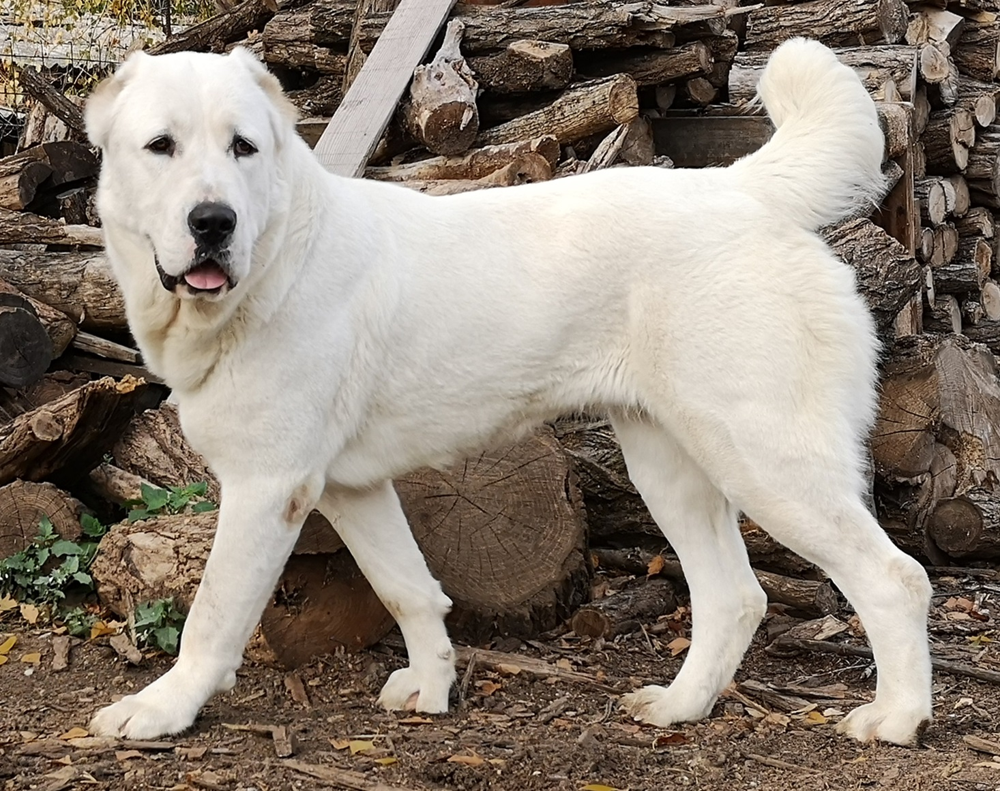
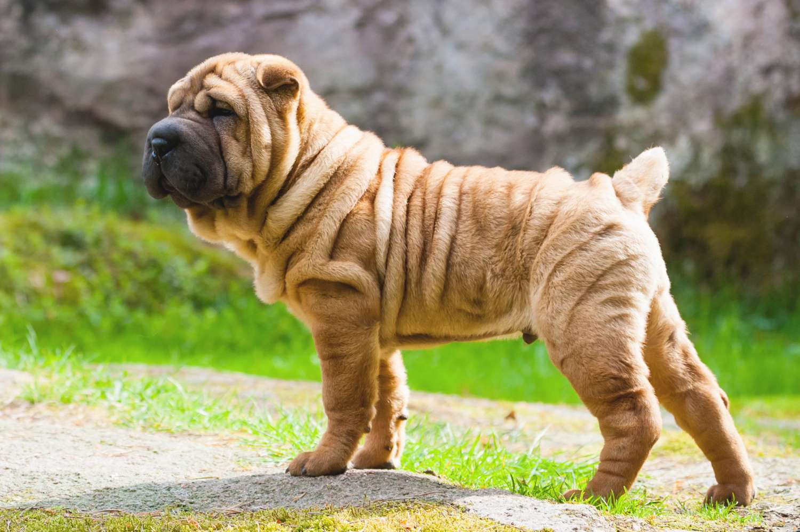

Походження
Учені ще досі не прийшли до єдиної думки, хто з існуючих нині диких тварин був прародичем собаки. Найпоширеніша теорія походження собак визнає, що розмаїтий світ наших чотирилапих друзів пішов від вовків, яких приручили первісні люди.
Цей процес приручення відбувався близько 15 тисяч років тому, коли люди почали займатися землеробством. Вони вирішили, що вовки, які жили поруч з ними, можуть бути корисними для охорони від інших хижаків, а також для полювання.
Найстарші породи
Нещодавно вчені опублікували список з 8 порід собак, аналіз ДНК яких засвідчує їхнє давнє походження. Ці породи сформувалися одними з перших і зустрічаються на великій території, яка охоплює Близький Схід, Сибір, Аляску, Тибет, Африку. Ось список цих собак, а країни, на території яких вони були виведені, названі з урахуванням сучасної географії:
| Порода |
Країна |
| Акіта-іну |
Японія |
| Аляскінський маламут |
Аляска |
| Афганська борза |
Афганістан |
| Басенджи |
Конго |
| Лхаса апсо |
Тібет |
| Пекінес |
Китай |
| Салюкі |
Іран |
| Шіба-іну |
Японія |
Середній вік цих порід – 2-3 тис. років. Наприклад, акіта-іну виведена майже 4 тис. років тому, салюкі – майже 5 тис. років тому.
Доповнення списку
Проте, ретельно проаналізувавши цю таблицю, можна дійти висновку, що він далеко неповний і його можна продовжити.
Алабай
Перша порода, яка майже одразу спадає на думку, і яку чомусь не включили до списку – алабай. Ця давня порода була відома вже 2 тис. років тому, а деякі дослідники навіть визначають значно раніше її походження – майже 4 тис. років.

Шарпей
Ще одна порода, яка виведена дуже давно, – шарпей. Ці собаки були відомі ще 3 тис. років тому. Це дуже стара порода, яка виводилася в Китаї.

Самоїд
Самоїд - одна із найдавніших нині відомих порід їздових собак. Протягом 3000 років самоїд був компаньйоном людей північних племен самоїдів (сьогоднішні їх нащадки — ненці). Самоїд завдяки своїй ізольованості від зовнішнього світу, уник процесу селекції та змішання із іншими породами. Порода належить до 5 групи МКФ (шпіци та примітивні).